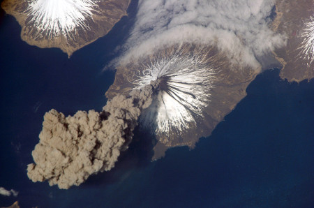

Ámbito Científico Tecnológico |
||
|
ESPA Nivel I |
Contenidos |
|
| Historia de la tierra y la vida: | ||
| La energía interna de la tierra | ||
La Tierra
Historia de la Tierra y de la vida: La energía interna de la Tierra
En el tema anterior se trataron los agentes geológicos externos que son los que modifican, alteran o transforman la superficie del planeta y la dotan de formas variadas.
En este tema trataremos los agentes geológicos internos, cuyo origen es la energía interna de la Tierra, y que son los factores que modifican el aspecto de la corteza terrestre actuando desde el interior: son los creadores de relieve.
Los principales agentes geológicos internos son los volcanes y los terremotos.
A continuación veremos cómo se producen los fenómenos geológicos internos, los productos que originan en forma de rocas, así como la teoría que las explica: la teoría de la tectónica de placas.
 |
| Erupción volcánica vista desde la Estación Espacial Internacional Imagen de Howcheng en Wikimedia Commons. Dominio Público |